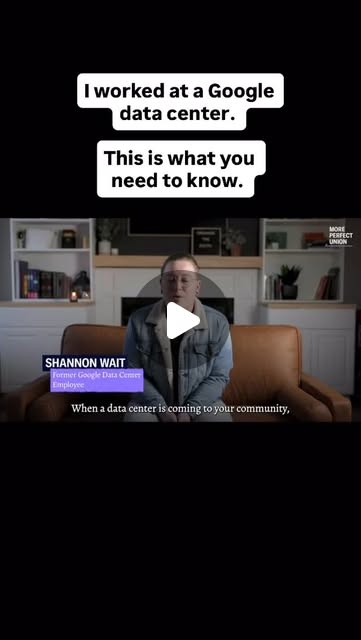

Instagram Reel

Taxpayers in Texas and Virginia are subsidizing data centers by handing out o...
video transcript (enriched by ClaudeClaw)
Summary
[CAPTION]
Taxpayers in Texas and Virginia are subsidizing data centers by handing out over $1 billion a year to tech companies.
More than 30 states subsidize data centers and Big Tech with massive tax breaks.
[CAPTION]
Taxpayers in Texas and Virginia are subsidizing data centers by handing out over $1 billion a year to tech companies.
More than 30 states subsidize data centers and Big Tech with massive tax breaks.
And while CEOs have promised thousands of jobs, they haven’t materialized.
[VIDEO]
When a data center is coming to your community, it's too good to be true. In 20 years, we may look back and go like not sure we should have done that. But right now, it feels right. All over the country, states and local governments have been rolling out the red carpet for data centers. America's newest boom towns aren't mines, they're data centers. Nothing less than a digital gold brush. Driving that is AI. They're offering huge tax breaks and other financial incentives to developers and tech companies. And what do communities get in exchange? Google's forty billion dollar announcements. Tech Titans pouring billions of dollars. 27 billion six hundred billion dollars. Skilled tradespeople are needed to build these high-tech centers. Dozens of jobs. Everyone's jobs will change. Hundreds of jobs. Jobs, high-paying jobs. Over 100,000 American jobs almost immediately. But is that actually true? They take great care of us, they pay travel, they give us per diem. The cluster of data centers in your community may not provide you any benefit whatsoever. And I traveled from my home state of Oregon, which has seen mass layoffs and disappearing tax revenue. Breaking news, Intel announced that it would be laying off more than 500 people. That number has since jumped to nearly 2400 people. Today, we're going to ask are the economic trade-offs power in the data center boom actually worth it for the rest of us? The answer is a lot more nuanced than I expected. It's a rural state, and agriculture has a forty-two billion dollar economic footprint here, supporting more than half a million jobs. But farmers I spoke to tell me they're under threat. I'm in Hillsborough, Oregon, and right behind me is an 1800s farmhouse. And five years ago, we were surrounded by hundreds of acres of farmland. Today, it's data centers everywhere you look. These are all data centers. They call this the data center alley of Hillsborough. There was a tulip farm here. There was a big grass seed operation, an ecosystem of farming that um that this land supports. Aaron Nichols is a farmer in Hillsborough, Oregon, 20 miles from where I live in Portland. He was the first stop in my investigation because before digging into the jobs at data centers, I wanted to know what happens to other industries when big tech moves in. How many people do you employ here on the farm? We employ about 10 people on our farm on about 15 acres. We could expand and grow more food for more people, but buying land is nearly impossible because people are hoping to hold on to it and sell it for a windfall profit. And it's not just his business. People that need an automotive shop or that are gonna open an electrical firm or small computer firm, they look at that land price and they're completely out of the market. Not only are they driving away other businesses, data centers are driving up costs too. Pacific Power in Portland General Electric customers saw a 50% increase in their electricity bills since 2020. Analysts say that data center growth is a major factor. And what's worse, data centers aren't contributing as much money to the community as you might think. That's because Oregon's laws give data centers some $330 million a year in tax breaks. There are a number of incentive systems to come to Oregon. The enterprise zone is a five-year no-property tax waiver for building uh industrial or building jobs. Out of that comes schools, parks, fire, police, municipal. We've lost that revenue for five years. Local residents are already seeing the impacts from this lost tax revenue. A report from Good Jobs First found Oregon schools lost $275 million to property tax abatements that could have gone to hire 3,600 teachers. If they would have paid their annual taxes, their property taxes would have been 7.22 million. So they're getting about six and a half million dollars. Six and a half million off their taxes. That's right, that they're not paying. Without tax revenue from data centers, the people who live in Hillsborough are going to end up suffering because they're not going to have the high quality schools that they deserve. And a lot of the that cash is just going to flow straight through the city like a sieve. We're all paying our taxes for the schools. The data centers are not. It feels like that money is being kind of extracted from our community. We pay the infrastructure costs. We don't see tax revenue, and we see the profits being funneled out to people we'll never meet. For the Nichols family, it's personal. How is the shortfall for the school district here? How is that impacting your family? My son's autistic. It makes it so that he cannot get an aid full-time, and it definitely makes it harder on us. We love our teachers, they're amazing. But we do see them doing more with less, um, and sometimes unfortunately less with less. We actually even lost a fifth and a fourth grade teacher. So that was a third and fourth grade factory split to the fifth grade after we split. The city of Hillsboro has been making a lot of economic development decisions at their meetings. The public really hasn't been consulted about what kind of economic development they want and what they want to see from that. Okay, so data centers have both driven down jobs from other industries and depleted key tax revenue. So what have they brought to Hillsborough? What was the trade-off? Driving around the area, it's clear that the construction of these massive data centers has created a demand for temporary construction jobs in Oregon. Electrician Ashley Cummings wanted to get in on that gold rush. I was studying to be a CNA and randomly decided I'm gonna go be an electrician because those data centers look busy. It was a really good idea. I make a lot of money, it was great. Ashley says her husband works on data centers too, but not in Oregon. He's nearly 2,000 miles away in Abilene, Texas. My husband decided to go work in Abilene, one of the biggest data centers built in the country. Big as all of the data centers here in Hillsborough combined into one. To find out more about what these jobs are really like, I decided to head to Abilene myself. This is OpenAI's massive Stargate AI data center in Abilene, Texas. A $500 billion project with Oracle and Nvidia. The company say they're creating some 6,000 temporary construction jobs and some 1,700 long-term jobs. And the state of Texas has given more than a billion dollars in tax breaks to welcome data centers. Google announced it's investing 40 billion dollars towards three new data centers in Texas. This is what Google CEO Sundar Pachai had to say. We are excited that our data center and energy investments are going to create jobs. Google currently employs thousands of Texans, and we support countless more jobs across the state through our work with local businesses. Second, our continued investment in the state over many years will support thousands of construction jobs. Texas will be the centerpiece for AI data centers for Google in the entire world. From California, Texas, Florida, Oklahoma, North Dakota, West Virginia, all over the United States. We have a lot of stuff energized right now, and pretty soon we're gonna turn on uh a quarter of the substation, which is gonna be 345,000 volts. What made you want to travel this far? The money. Twenty-three-year-old Ty Fields is from Sacramento. He's working as an electrician on the substation that will power Stargate, earning $3,200 a week. That's pretty great money for 23-year-old, you know. Can't beat that. Can't beat that. These are different jobs I worked on at different companies I've been with. One from Scanska, one from Deskorp, Phoenix 12, Phoenix 13. He's sharing an Airbnb for $1,400 a week with a few roommates. So then make yourself look comfortable. Including 22-year-old Damien Alvarado from San Antonio. You see yourselves in this for a long time. Yeah. I think that uh electrical and substations, especially are very important. I mean, they're gonna be around forever, you know, until humanity destroys itself. It is a bit dystopian. Very dystopian, yeah. It is on par 100%. 1984, Fahrenheit 451, Brave New World. Those are all uh literary pieces that are pretty much line for line what's going on uh in America today. Thousands of temporary workers like Ty and Damien are good news for the real estate industry in Abilene. Short-term housing revenue is up 40% this year, and hotels up 91%, compared to the same quarter last year. Sometimes it's $150 an hour, sometimes it's $250. The housing crunch has been great for Airbnb owners like Ken Hogan, who also heads up Abilene's Real Estate Association. And yeah, we really haven't had any trouble keeping it occupied, so we think it's price barely. Apartments are almost 100% occupied, with rents increasing 20% in the last year. They pay and they expect to pay a premium for the properties as soon as we put them out. We have multiple inquiries and applications on them. So it's been good for us. Just the fact of having that many workers out there, you know, six, seven thousand people. You know, they're gonna buy clothing here, fuel, food, they're gonna eat in our restaurant, stay in our properties and hotels. But there's another side. I've had days where I've literally cried about it when I can't get a place. Thousands of residents, like honesty.
View original on Instagram Reel →